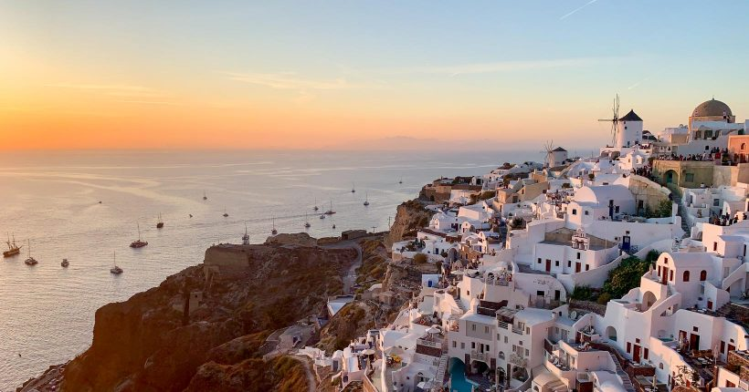

Torre Eiffel, Paris, França:
A Torre Eiffel é um dos ícones mais reconhecíveis do mundo e um dos destinos turísticos mais populares na Europa. Construída em 1889, ela oferece uma vista espetacular da cidade de Paris a partir de seus diferentes níveis. Você pode subir de elevador ou pelas escadas para apreciar a vista panorâmica.
Acrópole, Atenas, Grécia:
A Acrópole é um complexo arqueológico localizado no topo de uma colina em Atenas. É o lar de uma série de antigas estruturas gregas notáveis, com destaque para o Partenon, um templo dedicado à deusa Atena. A Acrópole é um local de grande importância histórica e arqueológica.
Coliseu, Roma, Itália:

O Coliseu é um anfiteatro romano antigo e um símbolo da grandiosidade da Roma Antiga. Construído no século I d.C., era usado para espetáculos públicos, como gladiadores e corridas de bigas. É uma das atrações turísticas mais visitadas da Itália.
Santorini, Grécia:
Santorini é uma ilha vulcânica no Mar Egeu, famosa por suas belas vistas panorâmicas, praias de areia negra, e arquitetura caiada de branco com telhados azuis. O pôr do sol em Oia, uma das cidades de Santorini, é especialmente famoso.
Castelo de Neuschwanstein, Baviera, Alemanha:

O Castelo de Neuschwanstein é um conto de fadas em forma de castelo situado nas montanhas da Baviera, na Alemanha. Foi a inspiração para o Castelo da Bela Adormecida da Disney. O castelo é conhecido por sua arquitetura impressionante e seu cenário pitoresco.